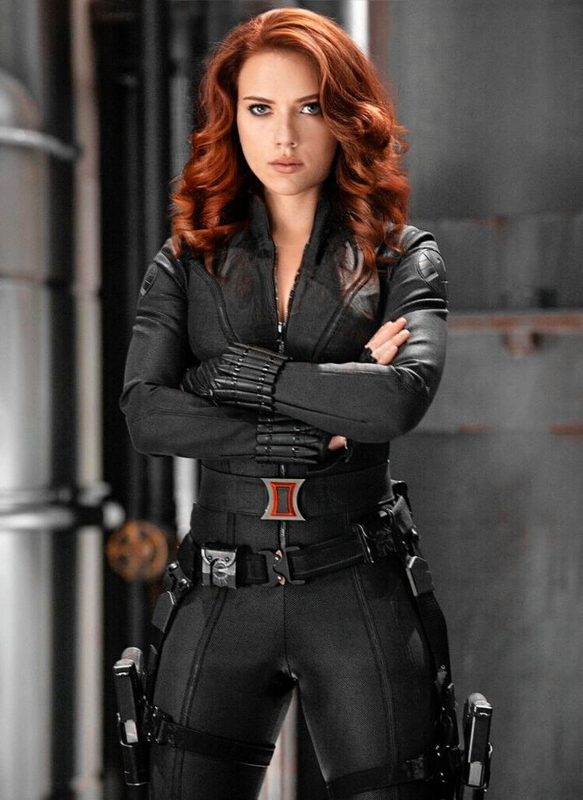

BLACK WIDOW
Natasha Romanoff is a highly trained spy and assassin, originally a Soviet agent who later defects to the United States and becomes a core member of the Avengers. She was trained in the Red Room, a covert Soviet training program that transformed young girls into elite operatives. This rigorous training endowed her with exceptional combat skills, agility, and intelligence. Natasha is proficient in various forms of martial arts, espionage, and marksmanship.
As Black Widow, Natasha often grapples with her dark past and seeks redemption for her previous actions. Her storylines frequently explore themes of identity, loyalty, and the blurred lines between good and evil. Despite lacking superpowers, her skills and resourcefulness make her a formidable hero.